✕
点击空白处或按 ESC 关闭
本指引适用于个体工商户、个人独资企业、合伙企业等经营所得纳税人办理经营所得预缴申报
可通过自然人电子税务局（扣缴端）或自然人电子税务局 Web 端办理
适合已安装扣缴客户端的纳税人或办税人员使用。先下载客户端，再登录、采集人员信息、切换至经营所得模块申报。
适合直接通过网页办理。登录自然人电子税务局后，进入经营所得 A 表，按页面提示填写并提交。
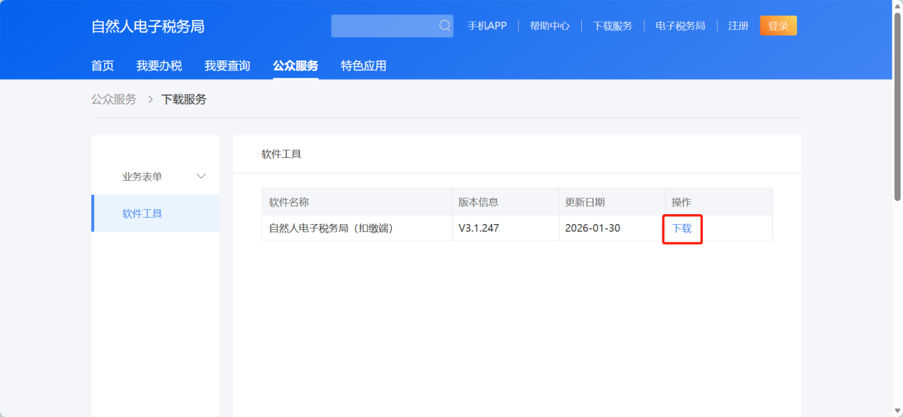
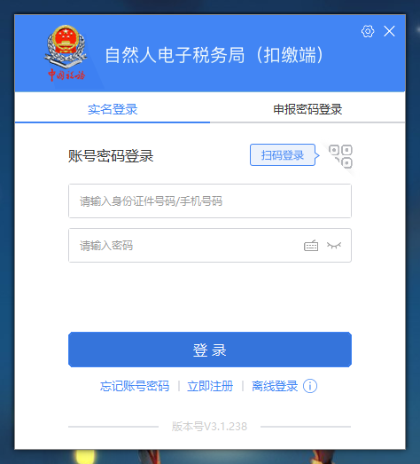
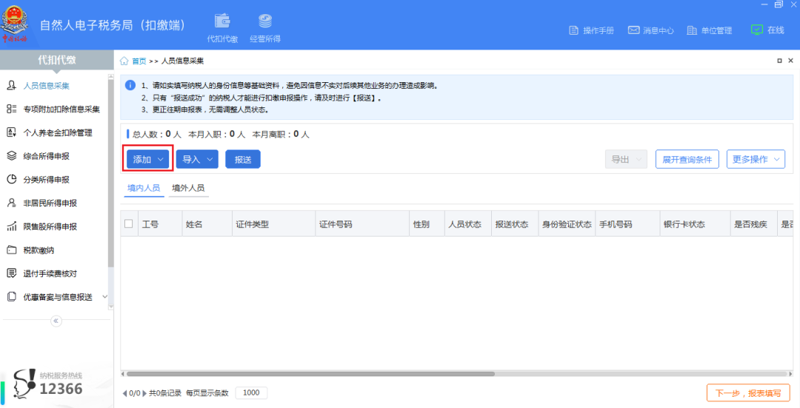
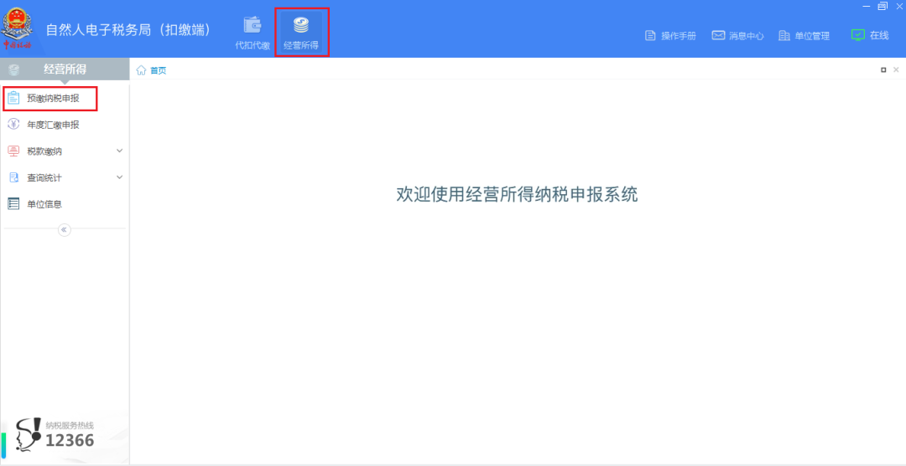
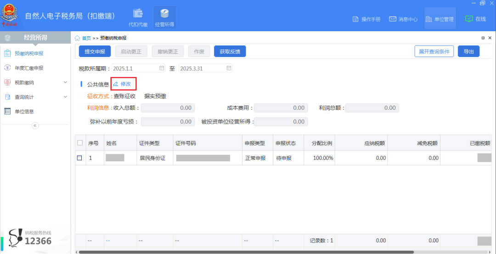
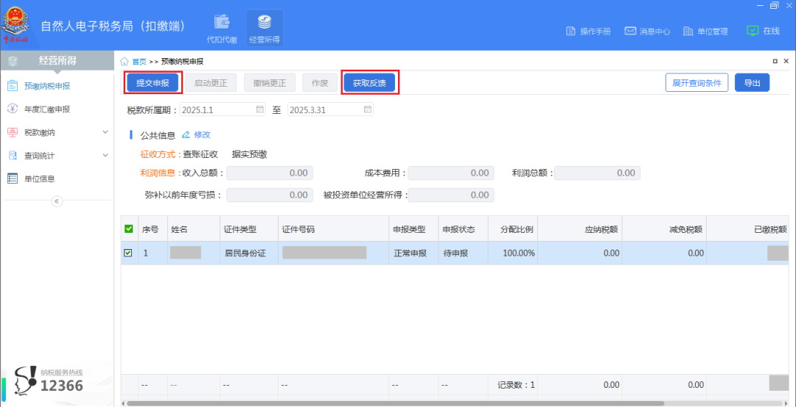
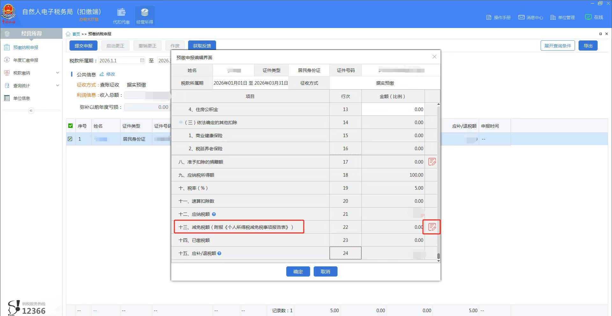
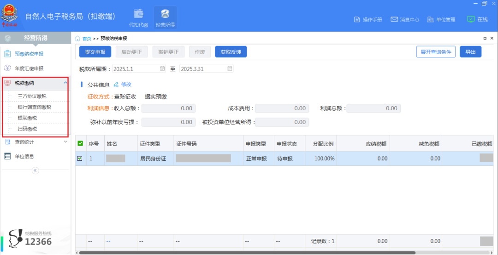
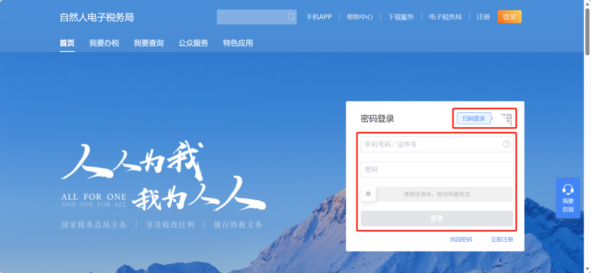
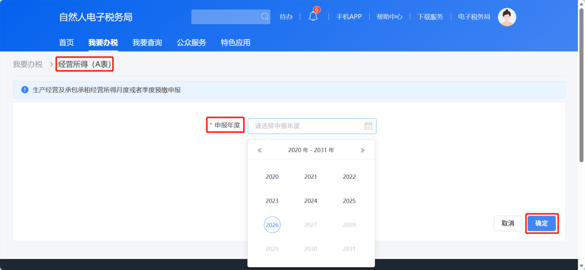
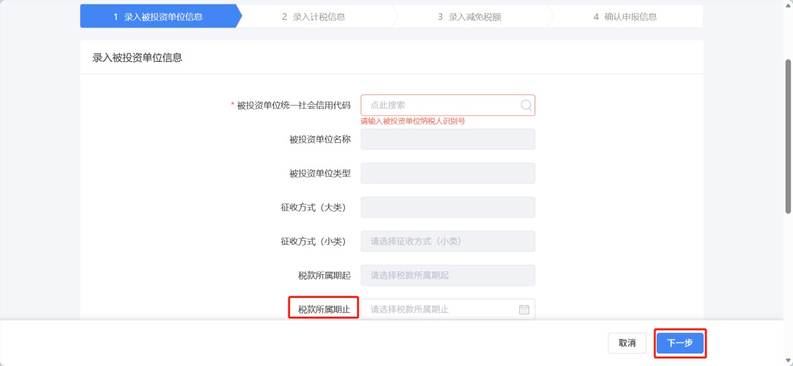
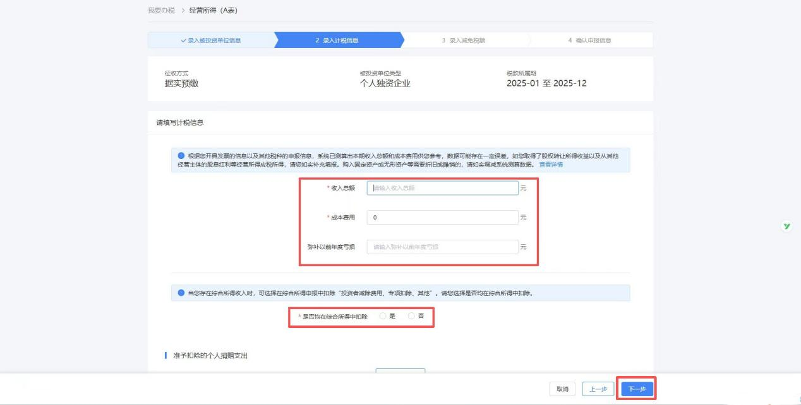
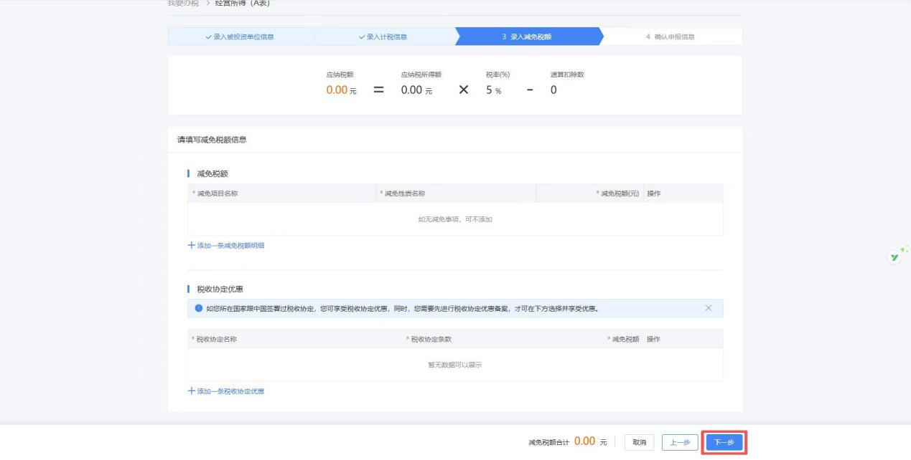
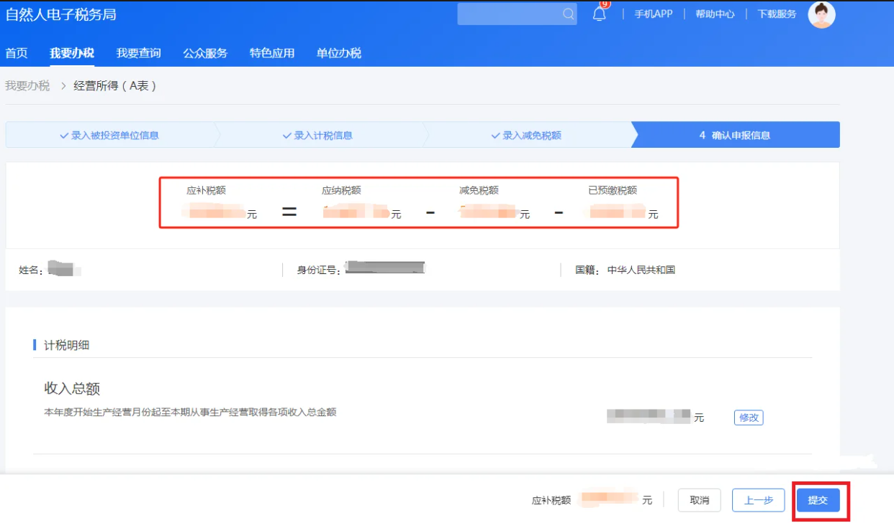
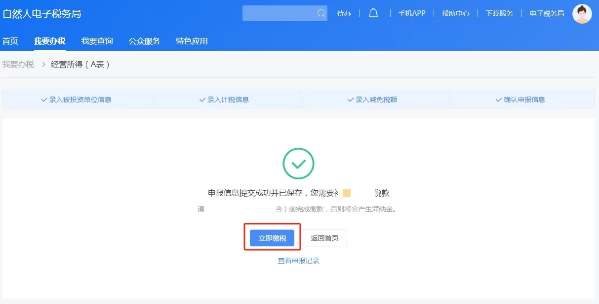